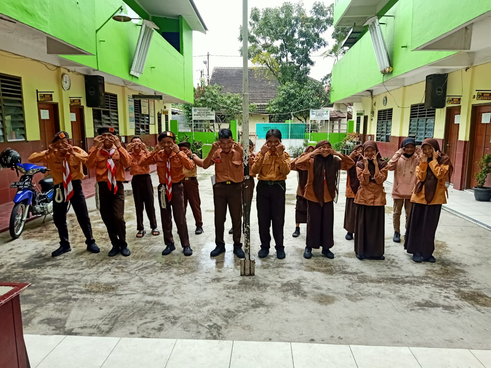
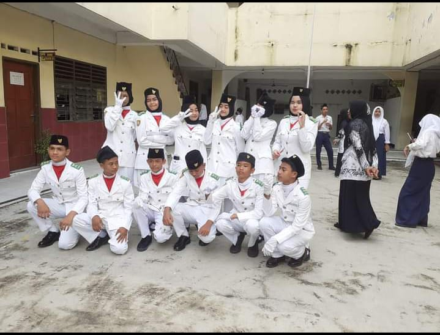

Personal
M. RISKI SYAHPUTRA adalah seorang individu yang lahir dan besar di kota yang berwarna dan bersejarah, Kota Medan. Sebagai anak pertama dari dua bersaudara, Riski tumbuh dalam lingkungan keluarga yang penuh kasih dan memberikan dukungan tak tergantung bagi ambisi dan minatnya. Sejak kecil, saya suka dengan berbisnis , berbisnis juga memerlukan kreativitas yang sangat tinggi agar orang orang minat dan tertarik.
Pendidikan

Pendidikan Formal
- SMKN 9 MEDAN
- SMP Swasta Alwashliyah Ampera II Medan
- SD Swasta Alwashliyah Ampera II Medan
Pendidikan Non - formal
- Situsional English course
- Sololearn
- W3Schools
Pengalaman
Bagi saya pentingnya pengalaman kerja terletak pada kemampuan untuk mencerminkan keterampilan, pengetahuan, dan pencapaian individu dalam konteks profesional. Diantara pengalaman kerja yang sudah dilakukan yaitu berikut ini :
SMP Swasta Alwashliyah Ampera II Medan

Mengikuti lomba pramuka tingkat smp/penggalang
Saya mendapatkan banyak sekali pengalaman yang saya dapat dari kegiatan ekstakulikuler tersebut seperti halnya sebuah kepemimpinan yang bertanggung jawab , kreativitas yang tinggi. Walaupun tidak memenangkan lomba tersebut setidaknya saya mendapatkan pelajaran dari kegiatan tersebut untuk jangan puas hati terlebih dahulu dan janganpernah putus asa untuk terus mengasah kemampuan.
SMP SMP Swasta Alwashliyah Ampera II Medan

Pada masa smp saya pernah terpilih untuk menjadi seorang paskibra
Di dalam paskibra ada tantanganbagi kita untuk selalu displin membentuk mental yang kuat serta ke fokusan saat melasanakan latihan atau pada saat penampilan.
Kontak Person
Untuk mengenal lebih lanjut, hubungi saya di media sosial berikut: